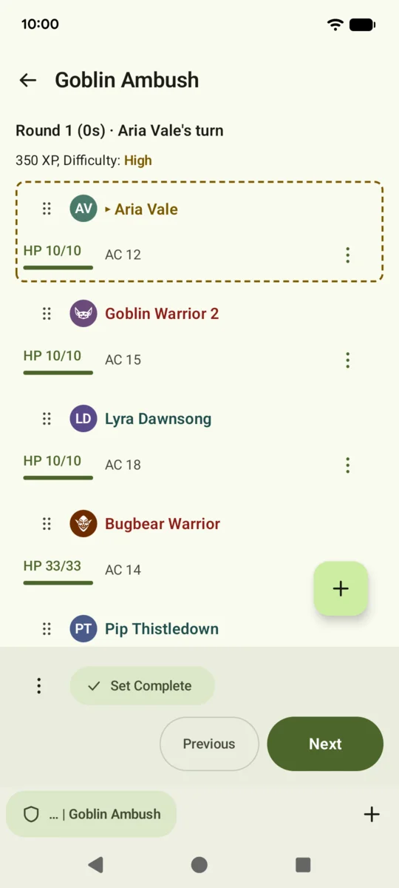
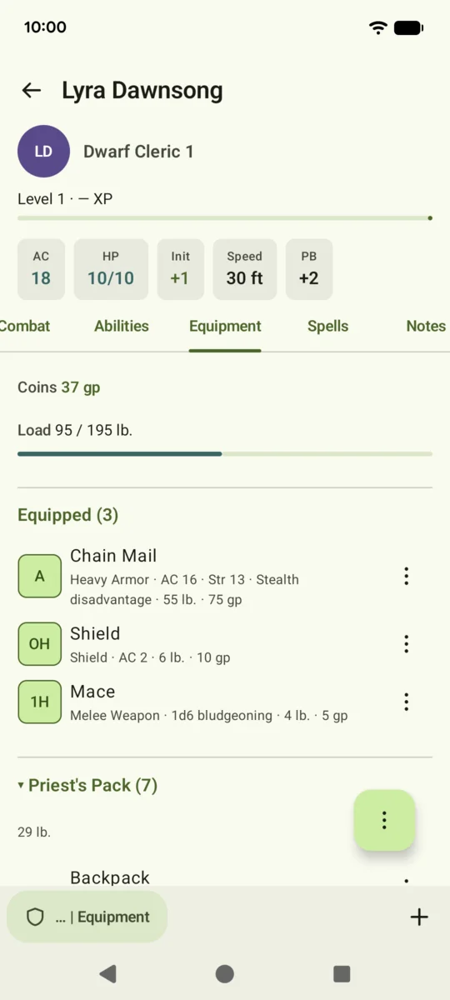
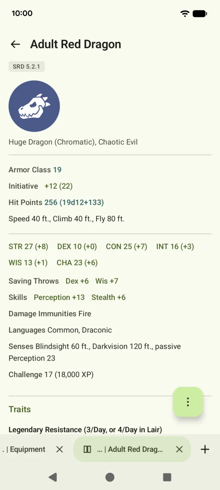
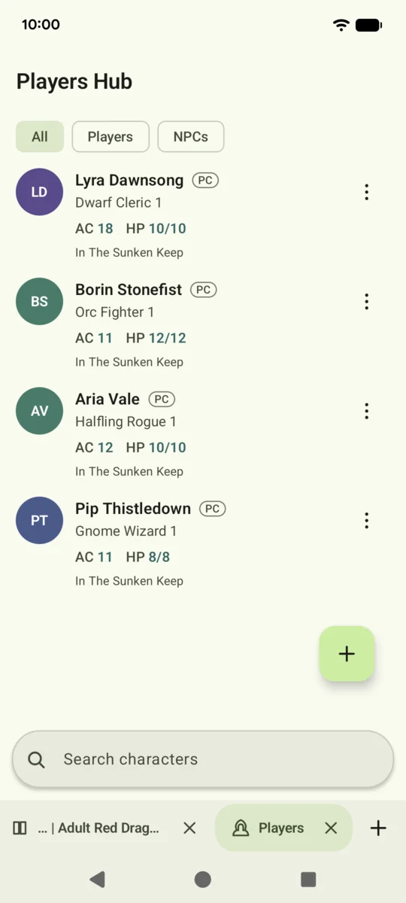
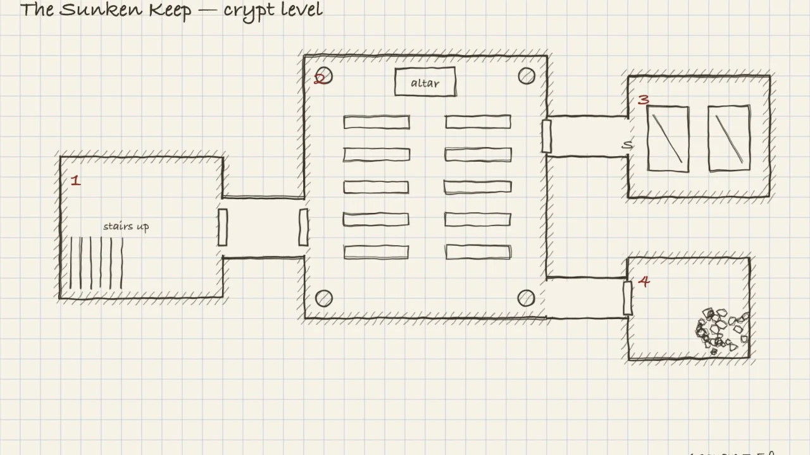

TableTrack
Run the fight. Play your character. Show the map. One app for the Dungeon Master and the players of fifth edition (5e) tabletop roleplaying games.
Google Play In testing on Android and Android TV; iPhone later. No account, no ads, no cloud.One app, three ways in
Each way in has its own icon and keeps its own data, so the Dungeon Master and a player can even share one phone.
TableTrack
For the Dungeon Master
- Campaigns, adventures and encounters, with the party, NPCs, notes and treasure
- Initiative, turns and rounds, damage and healing to many at once, conditions and concentration
- Encounters built by hand, from the bestiary, or generated to a difficulty
- Battle maps with a detected grid, fog of war, walls, lights and tokens
TablePlay
For the players
- Join the table with a scan of the code the DM shows you
- Your own character sheet, the party and the fight, live
- A timeline of every change the DM made, and why
- A private chat with the DM
TableCast
For the screen on the table
- On an Android TV box or a projector over the table
- Shows only what the DM chooses: the map, the grid and the tokens
- Finds the table on your Wi-Fi and asks the DM before it shows anything
Everything a session needs
A step-by-step character builder, level up and multiclassing, spells and slots, and the System Reference Document 5.2.1: 330 creatures, 339 spells, 470 items, species, classes, backgrounds, feats and the rules glossary. Add your own homebrew beside it.




The map, on the table
TableCast puts the battle map on a TV or a projector. The DM reveals the room as the party walks in.

Your game stays yours
TableTrack has no servers. The details are in the privacy policy.